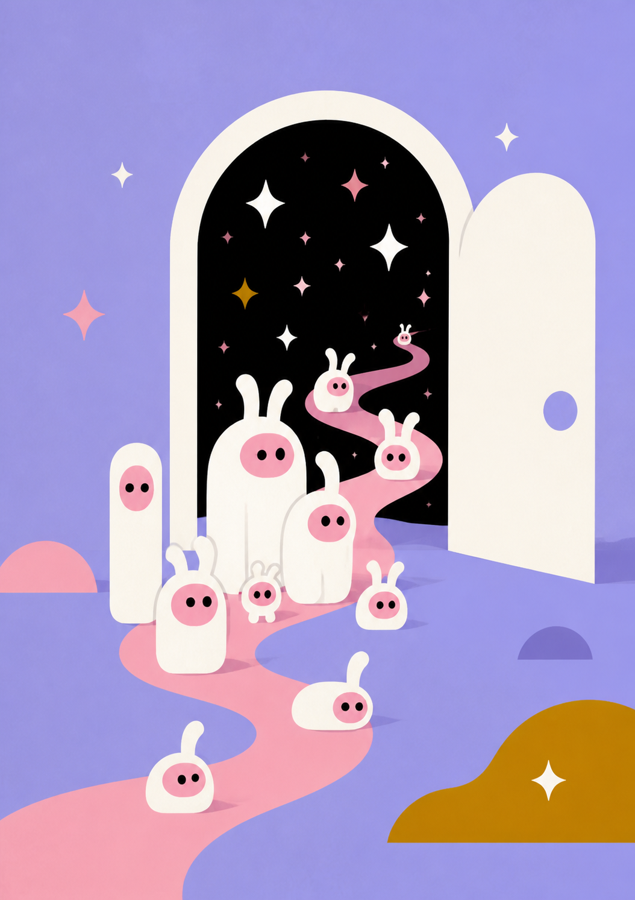

The next social primitive
Social should be something we do together.
AlterU turns a thought into a playable world—and every friend who enters helps shape what it becomes.
- 01
- Describe a world
- 02
- Make it playable
- 03
- Let friends change it

01 · The shift
From shared content
to shared experience.
The problem is not access to people. It is the depth of what we do together.
Feeds help us see each other.
AlterU gives us something to do together.
Today’s social primitive
Post → Scroll → React → Forget
The AlterU primitive
Enter → Play → Change → Remember
02 · Product
Play is not the end
of creation.
Play = Create
Say it. Build it.
Play it. Change it.
A sentence, image, memory, character or rule becomes a playable world. Friends do not just react to it. They enter, make choices and leave the world different from before.
- 01Express
- 02Create
- 03Invite
- 04Play
- 05Change
- 06Remember
Product today
From one sentence to a live game feed.
AlterU is available across iOS, Android, Telegram and the web. The feed already spans action games, social rituals, collectibles and strange little experiments.
Open the web product


03 · Technology
One stack.
Two horizons.
Creation now. Reasoning next.
Making games easier is the first step.
Making worlds alive is the larger one.
NowCreation Agent
A creator describes a game. The agent generates, modifies, tests, adapts and publishes it—turning game production into a conversational loop.
Intent→Build→Test→Publish
One prompt.
Then you play.
Racing, pinball, survival and a swipe challenge: each starts with a specific request, then cuts to the corresponding game in action.
Creation sequences are illustrated; gameplay is recorded from real games.
NextReasoning Worlds
The creator defines the world; the engine reasons inside it. Player actions produce consequences, update relationships and become part of the world’s persistent memory.
Act→Consequence→State→Memory
Build a world.
Keep the story going.
Describe a city, a hero and a conflict. Then step into the RPG: explore, talk, make a choice and see what happens next.
A concept film illustrating the future experience—not a recording of a released reasoning engine.
04 · Compounding
The durable asset
is shared history.
What compounds
Generated games become abundant.
Shared history stays scarce.
Business path
Value grows around creation and participation—not attention alone.
- NowCreation tools and subscriptions
- NextTransactions inside persistent worlds
- ScaleBrands, licensing and real-world integrations
05 · Why us
Consumer AI,
world systems,
game craft.
Built for a new behavior, not just a new feature
A decade of making AI work at billion-user scale—pointed at one question.
How do we turn AI from something people consume into something they experience together?
Bo ChenFounder & CEO
For ten years, Bo served as WeChat AI Technical Director, building voice, recommendation, search and multimodal AI products at billion-user scale. AlterU brings that experience to the creation agent, the reasoning engine and the consumer experience around both.
01Consumer AI at scale
02World infrastructure and economics
03US growth and game craft
06 · Product in motion
Meet the Uli Family.
See the loop in motion.
Three short films compress the AlterU idea into visible actions: make a world, enter it, then affect what happens to everyone inside.
01 · Create a world
Build us a secret gate.
A spoken idea becomes an entrance. The family crosses into the world they just made.
02 · Make, then play
Make the river twist.
The same rule that shapes the world immediately becomes something the family can play.
03 · Play together
Wake everyone with one hit.
One player’s move travels through the world and changes the experience for everyone else.
The AlterU social loop
Create. Play.
Change. Remember.
AlterU is building the next generation of social—where self-expression becomes a world, and every friend who plays becomes part of what gets created next.